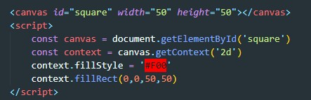

Элемент <canvas> не имеет собственного визуального представления, но он создает поверхность для рисования внутри документаю Большая часть прикладного интерфейса Canvas определена не в элементе <canvas>, а в объекте "Контекста рисования", который можно получить методом getContext() элемента играющего роль холста. Вызов метода getContext() с аргументом 2d возвращает объект CanvasRenderingContext2D, который можно использовать для рисования двухмерной графики
Пример
результат
результат